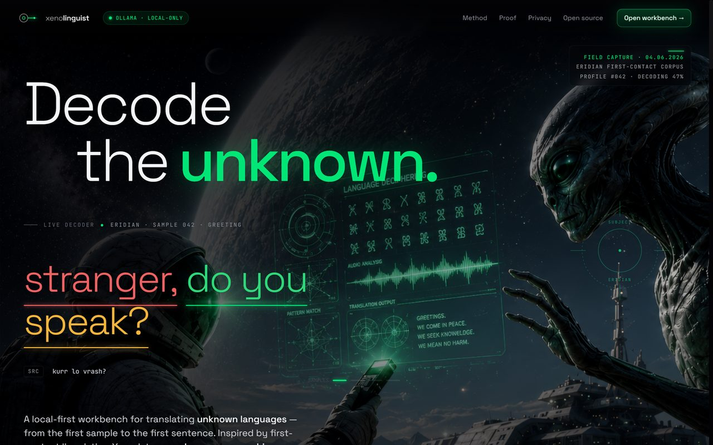

plate 01 — xenolinguist · shipped v1.0.0
case 01 · desktop app
Xenolinguist
AI-powered language decoding workbench inspired by Project Hail Mary — decode unknown languages from scratch with a local AI research partner. Shipped v1.0.0 as a downloadable Windows desktop app.
Problem — decode a language with zero prior samples. Approach — a six-phase, fully-offline pipeline from raw audio to translation.
React 19 · TypeScript · Electron · Node.js · Ollama · whisper.cpp · Transformers.js
- Six-phase decoding workflow from raw audio samples to full translation
- Streaming local AI via Ollama with multi-model routing and task prompts
- Fully offline voice pipeline — espeak-ng speech, whisper.cpp transcription, and wav2vec2 IPA phoneme recognition
- Desktop release with auto-update, sandbox conlang mode, and a public download site